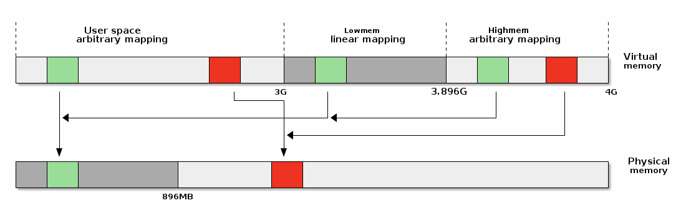

SO2 Lecture 06 - Address Space¶
Lecture objectives:¶
- x86 MMU
- Segmentation
- Paging
- TLB
- Linux Address Space
- User
- Kernel
- High memory
x86 MMU¶
The x86 MMU has a segmentation and a pagination unit. The segmentation unit can be used to define logical memory segments defined by a logical (virtual) start address, a base linear (mapped) address and a size. A segment can also restrict access based on the access type (read, execute, write) or the privilege level (we can define some segments to be accessible only by kernel for example).
When the CPU makes a memory access, it will use the segmentation unit to translate the logical address to a linear address, based on the information in the segment descriptor.
If pagination is enabled the linear address will be further transformed into a physical address, using the information from the page tables.
Note that the segmentation unit can not be disabled, so if the MMU has been enabled, segmentation will always be used.

Selectors¶
A program can use multiple segments and in order to determine which segment to use, special registers (named selectors) are used. The basic selectors that are typically used are CS - "Code Selector", DS - "Data Selector" and SS - "Stack Selector".
Instruction fetches will by default use CS, while data access will by default use DS unless the stack is used (e.g. data access through the pop and push instructions) in which case SS will be used by default.
Selectors have three main fields: the index, the table index and the running privilege level:

The index will be used to determine which entry of the descriptor table should be used. TI is used to select either the Global Descriptor Table (GDT) or the Local Descriptor Table (LDT). The tables are effectively arrays that start at the location specified in the special registers GDTR (for GDT) and LDTR (for LDT).
Note
LDT was designed so that applications can define their own particular segments. Although not many applications use this feature, Linux (and Windows) provide system calls that allows an application to create their own segments.
RPL is only used for CS and it represents the current privilege level. There are 4 privilege levels, the highest level being 0 (and typically used by the kernel) and the lowest is 3 (and typically used by user applications).
Segment descriptor¶
The CPU will use the index field of the selector to access an 8 byte descriptor:

- Base: linear address for the start of the segment
- Limit: size of the segment
- G: granularity bit: if set the size is in bytes otherwise in 4K pages
- B/D: data/code
- Type: code segment, data/stack, TSS, LDT, GDT
- Protection: the minimum priviledge level required to access the segment (RPL is checked against DPL)
Some of the descriptor fields should be familiar. And that is because there is some resemblance with Interrupt Descriptors we looked at previously.
Segmentation in Linux¶
In Linux, segments are not used to define the stack, code or data. These will be setup using the paging unit as it allows better granularity and more importantly it allows Linux to use a generic approach that works on other architectures (that don't have segmentation support).
However, because the segmentation unit can not be disabled Linux must create 4 generic 0 - 4GB segments for: kernel code, kernel data, user code and user data.
Besides these, Linux uses segments for implementing Thread Local Storage (TLS) together with the set_thread_area system call.
It also uses the TSS segment in order to define the kernel stack to use when a change of privilege (e.g. system call, interrupt while running in user-space) occurs.
/*
* The layout of the per-CPU GDT under Linux:
*
* 0 - null <=== cacheline #1
* 1 - reserved
* 2 - reserved
* 3 - reserved
*
* 4 - unused <=== cacheline #2
* 5 - unused
*
* ------- start of TLS (Thread-Local Storage) segments:
*
* 6 - TLS segment #1 [ glibc's TLS segment ]
* 7 - TLS segment #2 [ Wine's %fs Win32 segment ]
* 8 - TLS segment #3 <=== cacheline #3
* 9 - reserved
* 10 - reserved
* 11 - reserved
*
* ------- start of kernel segments:
*
* 12 - kernel code segment <=== cacheline #4
* 13 - kernel data segment
* 14 - default user CS
* 15 - default user DS
* 16 - TSS <=== cacheline #5
* 17 - LDT
* 18 - PNPBIOS support (16->32 gate)
* 19 - PNPBIOS support
* 20 - PNPBIOS support <=== cacheline #6
* 21 - PNPBIOS support
* 22 - PNPBIOS support
* 23 - APM BIOS support
* 24 - APM BIOS support <=== cacheline #7
* 25 - APM BIOS support
*
* 26 - ESPFIX small SS
* 27 - per-cpu [ offset to per-cpu data area ]
* 28 - stack_canary-20 [ for stack protector ] <=== cacheline #8
* 29 - unused
* 30 - unused
* 31 - TSS for double fault handler
*/
DEFINE_PER_CPU_PAGE_ALIGNED(struct gdt_page, gdt_page) = { .gdt = {
#ifdef CONFIG_X86_64
/*
* We need valid kernel segments for data and code in long mode too
* IRET will check the segment types kkeil 2000/10/28
* Also sysret mandates a special GDT layout
*
* TLS descriptors are currently at a different place compared to i386.
* Hopefully nobody expects them at a fixed place (Wine?)
*/
[GDT_ENTRY_KERNEL32_CS] = GDT_ENTRY_INIT(0xc09b, 0, 0xfffff),
[GDT_ENTRY_KERNEL_CS] = GDT_ENTRY_INIT(0xa09b, 0, 0xfffff),
[GDT_ENTRY_KERNEL_DS] = GDT_ENTRY_INIT(0xc093, 0, 0xfffff),
[GDT_ENTRY_DEFAULT_USER32_CS] = GDT_ENTRY_INIT(0xc0fb, 0, 0xfffff),
[GDT_ENTRY_DEFAULT_USER_DS] = GDT_ENTRY_INIT(0xc0f3, 0, 0xfffff),
[GDT_ENTRY_DEFAULT_USER_CS] = GDT_ENTRY_INIT(0xa0fb, 0, 0xfffff),
#else
[GDT_ENTRY_KERNEL_CS] = GDT_ENTRY_INIT(0xc09a, 0, 0xfffff),
[GDT_ENTRY_KERNEL_DS] = GDT_ENTRY_INIT(0xc092, 0, 0xfffff),
[GDT_ENTRY_DEFAULT_USER_CS] = GDT_ENTRY_INIT(0xc0fa, 0, 0xfffff),
[GDT_ENTRY_DEFAULT_USER_DS] = GDT_ENTRY_INIT(0xc0f2, 0, 0xfffff),
/*
* Segments used for calling PnP BIOS have byte granularity.
* They code segments and data segments have fixed 64k limits,
* the transfer segment sizes are set at run time.
*/
/* 32-bit code */
[GDT_ENTRY_PNPBIOS_CS32] = GDT_ENTRY_INIT(0x409a, 0, 0xffff),
/* 16-bit code */
[GDT_ENTRY_PNPBIOS_CS16] = GDT_ENTRY_INIT(0x009a, 0, 0xffff),
/* 16-bit data */
[GDT_ENTRY_PNPBIOS_DS] = GDT_ENTRY_INIT(0x0092, 0, 0xffff),
/* 16-bit data */
[GDT_ENTRY_PNPBIOS_TS1] = GDT_ENTRY_INIT(0x0092, 0, 0),
/* 16-bit data */
[GDT_ENTRY_PNPBIOS_TS2] = GDT_ENTRY_INIT(0x0092, 0, 0),
/*
* The APM segments have byte granularity and their bases
* are set at run time. All have 64k limits.
*/
/* 32-bit code */
[GDT_ENTRY_APMBIOS_BASE] = GDT_ENTRY_INIT(0x409a, 0, 0xffff),
/* 16-bit code */
[GDT_ENTRY_APMBIOS_BASE+1] = GDT_ENTRY_INIT(0x009a, 0, 0xffff),
/* data */
[GDT_ENTRY_APMBIOS_BASE+2] = GDT_ENTRY_INIT(0x4092, 0, 0xffff),
[GDT_ENTRY_ESPFIX_SS] = GDT_ENTRY_INIT(0xc092, 0, 0xfffff),
[GDT_ENTRY_PERCPU] = GDT_ENTRY_INIT(0xc092, 0, 0xfffff),
GDT_STACK_CANARY_INIT
#endif
} };
EXPORT_PER_CPU_SYMBOL_GPL(gdt_page);
x86 Paging¶
The x86 paging unit support two types of paging: regular and extended paging.
Regular paging has 2 levels and a fixed page size of 4KB. The linear address is split in three fields:
- Directory (the 10 most significant bits)
- Table (the next 10 most bits)
- Offset (the least significant 12 bits)

When extended paging is enabled, a single level is used and pages are 4MB. The linear address is split in two fields:
- Directory (10 most significant bits)
- Offset (least significant 22 bits)

Page tables¶
We can mix regular and extended paging, the directory page has a bit that specifies if extended or regular paging should be used. The special CR3 register points to the base of the page directory and page directory entries point to the base of the page table.
Both page directory and page table have 1024 entries and each entry has 4 bytes.
All tables are stored in memory and the page table addresses are physical addresses.
Page table entry fields:
- Present/Absent
- PFN (Page Frame Number): the most 20 significant bits of the physical address
- Accessed - not updated by hardware (can be used by OS for housekeeping)
- Dirty - not updated by hardware (can be used by OS for housekeeping)
- Access rights: Read/Write
- Privilege: User/Supervisor
- Page size - only for page directory; if set extended paging is used
- PCD (page cache disable), PWT (page write through)
Linux paging¶
Linux paging uses 4 levels in order to support 64bit architectures. The diagram below shows how the various virtual address chunks are used to index the page tables and compute the physical address.

Linux has a common API for creating and walking page tables. Creating and modifying address spaces for kernel and processes is done using the same generic code which relies on macros and functions to translate these generic operations in code that runs on different architectures.
Here is an example of how we can translate a virtual address to a physical address, using the Linux page table APIs:
struct * page;
pgd_t pgd;
pmd_t pmd;
pud_t pud;
pte_t pte;
void *laddr, *paddr;
pgd = pgd_offset(mm, vaddr);
pud = pud_offet(pgd, vaddr);
pmd = pmd_offset(pud, vaddr);
pte = pte_offset(pmd, vaddr);
page = pte_page(pte);
laddr = page_address(page);
paddr = virt_to_phys(laddr);
In order to support architectures with less than 4 levels of pagination (such as for x86 32bits) some macros and / or functions are 0 / empty:
static inline pud_t * pud_offset(pgd_t * pgd,unsigned long address)
{
return (pud_t *)pgd;
}
static inline pmd_t * pmd_offset(pud_t * pud,unsigned long address)
{
return (pmd_t *)pud;
}
Translation Look-aside Buffer¶
When using virtual memory, due to the table page organization, we may need an extra 1 (x86 extended paging), 2 (x86 regular paging) or 3 (x86 64bit) memory access(es).
A special cache, called Translation Look-aside Buffer (TLB) is used to speed up translations from virtual address to physical addresses.
The TLB has the following properties:
- Caches paging information (PFN, rights, privilege)
- Content Addressable Memory / Associative Memory
- Very small (64-128)
- Very fast (single cycle due to parallel search implementation)
- CPUs usually have two TLBs: i-TLB (code) and d-TLB (data)
- TLB miss penalty: up hundreds of cycles
As with other caches, we must be careful to not create consistency issues.
For example, when changing the mapping of one page to point to a different physical memory location in the page tables, we must invalidate the associated TLB entry. Otherwise, the MMU will do the translation to the old physical address instead of the new physical address.
The x86 platform supports TLB invalidation through two types of operations.
Single address invalidation:
mov $addr, %eax
invlpg %(eax)
Full invalidation:
mov %cr3, %eax
mov %eax, %cr3
Linux address space¶
Address space options for 32bit systems¶
There are two main options for implementing kernel and user space: either dedicated address spaces for each, or split a shared address space.

Each has advantages and disadvantages:
- Disadvantages for dedicated kernel space:
- Fully invalidating the TLB for every system call
- Disadvantages for shared address space
- Less address space for both kernel and user processes
Linux is using a split address space for 32 bit systems, although in the past there were options for supporting 4/4s split or dedicated kernel address space (on those architecture that supports it, e.g. x86). Linux always uses split address space for 64 bit systems.
On overview of the Linux address space is presented below:

Linear mappings¶
Linear mappings refer to particular way of mapping virtual pages to physical pages, where virtual page V, V + 1, ... V + n is mapped to physical pages P, P + 1, ..., P + n.
To understand the necessity of linear mappings, we should look at common kernel operations that involves using both the virtual and physical address of a page such as an I/O transfer:
- Use the virtual address of a kernel buffer in order to copy to data from from user space
- Walk the page tables to transform the kernel buffer virtual address to a physical address
- Use the physical address of the kernel buffer to start a DMA transfer
However, if we use linear mappings and the kernel buffers are in the linear mapping area, then:
- Virtual to physical address space translation is reduced to one operation (instead of walking the page tables)
- Less memory is used to create the page tables
- Less TLB entries are used for the kernel memory
Highmem¶
The "highmem" part of the virtual address space is used to create arbitrary mappings (as opposed to linear mappings in lowmem). On 32bit systems the highmem area is absolutely required in order to access physical memory outside of lowmem. However, highmem is also used on 64bit systems but the use-case there is mainly to allow arbitrary mappings in kernel space.

There are multiple types of mappings in the highmem area:
- Multi-page permanent mappings (vmalloc, ioremap)
- Temporary 1 page mappings (atomic_kmap)
- Permanent 1 page mappings (kmap, fix-mapped linear addresses)
Multiple page mappings allows mapping of ranges of physical memory into the highmem area. Each such mapping is guarded by a non-accessible page to catch buffer overflow and underflow errors.
The APIs that maps multiple pages into highmem are:
void* vmalloc(unsigned long size);
void vfree(void * addr);
void *ioremap(unsigned long offset, unsigned size);
void iounmap(void * addr);
vmalloc() is used to allocate non-contiguous system memory
pages as a contiguous segment in the kernel virtual address space. It
is usefully when allocating large buffers because due to fragmentation
it is unlikely to find free large chunks of physical contiguous memory.
ioremap() is used to map device memory or device registers
into the kernel address space. It maps a contiguous physical memory
range into highmem with page caching disabled.
Fixed-mapped linear addresses¶
Fixed-mapped linear addresses are a special class of singular page mappings that are used for accessing registers of commonly used peripherals such as the APIC or IO APIC.
Typical I/O access for peripherals is to use a base (the kernel virtual address space where the peripheral registers are mapped) + offsets for various registers.
In order to optimize access, the base is reserved at compile time (e.g. 0xFFFFF000). Since the base is constant, the various register accesses of the form base + register offset will also be constant and thus the compiler will avoid generating an extra instruction.
In summary, fixed-mapped linear addresses are:
- Reserved virtual addresses (constants)
- Mapped to physical addresses during boot
set_fixmap(idx, phys_addr)
set_fixmap_nocache(idx, phys_addr)
These addresses are architecture defined and, as an example, this is the map for x86:
/*
* Here we define all the compile-time 'special' virtual
* addresses. The point is to have a constant address at
* compile time, but to set the physical address only
* in the boot process.
* for x86_32: We allocate these special addresses
* from the end of virtual memory (0xfffff000) backwards.
* Also this lets us do fail-safe vmalloc(), we
* can guarantee that these special addresses and
* vmalloc()-ed addresses never overlap.
*
* These 'compile-time allocated' memory buffers are
* fixed-size 4k pages (or larger if used with an increment
* higher than 1). Use set_fixmap(idx,phys) to associate
* physical memory with fixmap indices.
*
* TLB entries of such buffers will not be flushed across
* task switches.
*/
enum fixed_addresses {
#ifdef CONFIG_X86_32
FIX_HOLE,
#else
#ifdef CONFIG_X86_VSYSCALL_EMULATION
VSYSCALL_PAGE = (FIXADDR_TOP - VSYSCALL_ADDR) >> PAGE_SHIFT,
#endif
#endif
FIX_DBGP_BASE,
FIX_EARLYCON_MEM_BASE,
#ifdef CONFIG_PROVIDE_OHCI1394_DMA_INIT
FIX_OHCI1394_BASE,
#endif
#ifdef CONFIG_X86_LOCAL_APIC
FIX_APIC_BASE, /* local (CPU) APIC) -- required for SMP or not */
#endif
#ifdef CONFIG_X86_IO_APIC
FIX_IO_APIC_BASE_0,
FIX_IO_APIC_BASE_END = FIX_IO_APIC_BASE_0 + MAX_IO_APICS - 1,
#endif
#ifdef CONFIG_X86_32
FIX_KMAP_BEGIN, /* reserved pte's for temporary kernel mappings */
FIX_KMAP_END = FIX_KMAP_BEGIN+(KM_TYPE_NR*NR_CPUS)-1,
#ifdef CONFIG_PCI_MMCONFIG
FIX_PCIE_MCFG,
#endif
Notice how easy is to do the conversion between the virtual address and the fixed address indexes:
#define __fix_to_virt(x) (FIXADDR_TOP - ((x) << PAGE_SHIFT))
#define __virt_to_fix(x) ((FIXADDR_TOP - ((x)&PAGE_MASK)) >> PAGE_SHIFT)
#ifndef __ASSEMBLY__
/*
* 'index to address' translation. If anyone tries to use the idx
* directly without translation, we catch the bug with a NULL-deference
* kernel oops. Illegal ranges of incoming indices are caught too.
*/
static __always_inline unsigned long fix_to_virt(const unsigned int idx)
{
BUILD_BUG_ON(idx >= __end_of_fixed_addresses);
return __fix_to_virt(idx);
}
static inline unsigned long virt_to_fix(const unsigned long vaddr)
{
BUG_ON(vaddr >= FIXADDR_TOP || vaddr < FIXADDR_START);
return __virt_to_fix(vaddr);
}
inline long fix_to_virt(const unsigned int idx)
{
if (idx >= __end_of_fixed_addresses)
__this_fixmap_does_not_exist();
return (0xffffe000UL - (idx << PAGE_SHIFT));
}
Temporary mappings¶
Temporary mappings can be used to map a single physical page, very
fast, in kernel space. It can be used in interrupt context but the
atomic kmap section, defined in between the kmap_atomic() and
kunmap_atomic() can not be preempted. That is why these are
called temporary mappings, as they can only be used momentarily.
Temporary mappings are very fast because there is no locking or searching required and also there is no full TLB invalidation, just the particular virtual page will be TLB invalidated.
Here are some code snippets that show that temporary mappings are implemented:
#define kmap_atomic(page) kmap_atomic_prot(page, kmap_prot)
void *kmap_atomic_high_prot(struct page *page, pgprot_t prot)
{
unsigned long vaddr;
int idx, type;
type = kmap_atomic_idx_push();
idx = type + KM_TYPE_NR*smp_processor_id();
vaddr = __fix_to_virt(FIX_KMAP_BEGIN + idx);
BUG_ON(!pte_none(*(kmap_pte-idx)));
set_pte(kmap_pte-idx, mk_pte(page, prot));
arch_flush_lazy_mmu_mode();
return (void *)vaddr;
}
EXPORT_SYMBOL(kmap_atomic_high_prot);
static inline int kmap_atomic_idx_push(void)
{
int idx = __this_cpu_inc_return(__kmap_atomic_idx) - 1;
#ifdef CONFIG_DEBUG_HIGHMEM
WARN_ON_ONCE(in_irq() && !irqs_disabled());
BUG_ON(idx >= KM_TYPE_NR);
#endif
return idx;
}
Notice that fix-mapped linear addresses and a stack like approach is used: each CPU has KM_TYPE_NR reserved entries which are used in a first code first serve option. This allows using multiple temporary mappings at once, for example one in process context, one in an interrupt handler, and a few more in tasklets or softirqs.
Permanent mappings¶
Permanent mappings allows users to hold on to a mapping for long (undefined) periods of time which means that context switch are allowed after a mapping and before releasing it.
This flexibility comes with a price though. A search operation is performed to find a free entry and they can not be used in interrupt context - the operation that tries to find a free virtual address page may block. There is a limited number of permanent mappings available (topically one page is reserved for permanent mappings)